The purpose of this exercise was to investigate the 2016 presidential campaign contribution statistics and obtain some insight into the data. Some of the questions I planned to answer included the following:
In the foregoing discussion we will look at these questions and try to obtain answers to these questions.
I start by loading the data into a dataframe. While the assignment required that we look at the campaign contribution from any particular state, I wanted to look at the data for the entire country as some of the questions I wanted to answer include all 50 states. I reduced my dataframe to variables of interest and introduced two derived variables - the candidate's gender and his/her political party.
## 'data.frame': 3802344 obs. of 13 variables:
## $ cand_id : Factor w/ 24 levels "P00003392","P20002671",..: 11 11 11 11 11 11 11 11 11 11 ...
## $ cand_nm : Factor w/ 24 levels "Bush, Jeb","Carson, Benjamin S.",..: 18 18 18 18 18 18 18 18 18 18 ...
## $ contbr_nm : chr "BLUM, MAUREEN" "DODSON, MARK B. MR." "RUCINSKI, ROBERT" "DOHERTY, THERESA" ...
## $ contbr_city : chr "WASHINGTON" "ATLANTA" "APO" "APO" ...
## $ contbr_st : Factor w/ 94 levels "20","30","AA",..: 1 2 4 4 4 4 4 4 4 4 ...
## $ contbr_zip : chr "DC" "GA" "090960009" "097520002" ...
## $ contbr_employer : chr "STRATEGIC COALITIONS & INITIATIVES LL" "MORTGAGE CAPITAL ADVISORS" "US ARMY" "DODEA/DS" ...
## $ contbr_occupation: chr "OUTREACH DIRECTOR" "PRIVATE MORTGAGE BANKING" "PHYSICIAN" "TEACHER" ...
## $ contb_receipt_amt: num 175 25 100 500 100 ...
## $ contb_receipt_dt : Date, format: "2016-03-15" "2016-03-16" ...
## $ party : Factor w/ 4 levels "D","G","L","R": 4 4 4 4 4 4 4 4 4 4 ...
## $ can_gender : Factor w/ 2 levels "F","M": 2 2 2 2 2 2 2 2 2 2 ...
## $ zip : chr NA NA "09096" "09752" ...
## cand_id cand_nm
## P60007168:1895039 Sanders, Bernard :1895039
## P00003392: 836810 Clinton, Hillary Rodham : 836810
## P60006111: 551616 Cruz, Rafael Edward 'Ted': 551616
## P60005915: 248085 Carson, Benjamin S. : 248085
## P60006723: 104782 Rubio, Marco : 104782
## P40003576: 32275 Paul, Rand : 32275
## (Other) : 133737 (Other) : 133737
## contbr_nm contbr_city contbr_st
## Length:3802344 Length:3802344 CA : 653397
## Class :character Class :character TX : 307815
## Mode :character Mode :character NY : 297217
## FL : 202615
## WA : 167914
## MA : 155057
## (Other):2018329
## contbr_zip contbr_employer contbr_occupation
## Length:3802344 Length:3802344 Length:3802344
## Class :character Class :character Class :character
## Mode :character Mode :character Mode :character
##
##
##
##
## contb_receipt_amt contb_receipt_dt party can_gender
## Min. : -93308 Min. :2013-10-01 D:2739242 F: 865479
## 1st Qu.: 15 1st Qu.:2016-01-04 G: 914 M:2936865
## Median : 27 Median :2016-03-05 L: 645
## Mean : 131 Mean :2016-02-09 R:1061543
## 3rd Qu.: 98 3rd Qu.:2016-04-12
## Max. :4904861 Max. :2016-05-31
##
## zip
## Length:3802344
## Class :character
## Mode :character
##
##
##
##
In my first plot, I investigate the distribution of contribution amounts for the entire population. One quick note, I excluded contribution amounts greater than 99-percentile and negative amounts as they were related to refunds and some rare situations. In addition, I transformed the y-axis to a logarithmic scale so that the frequent bins don't overshadow the infrequent ones. As expected, most of the contribution amounts were in the range between 0 and 300. However, there were a few additional peaks for higher contribution amounts (>1000) and we will visit them later in this discussion. Please note that I chose not remove the outliers as I believe they contain valuable information and therefore should not be truncated from the dataset.
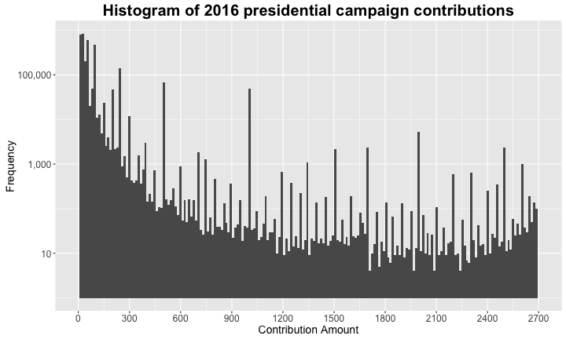
| Mean Contribution | Median_Contribution | Minimum Contribution | Maximum Contribution | Contribution IQR |
|---|---|---|---|---|
| 130.93 | 27 | -93308 | 4904861 | 83.26 |
In my next plot, we look at the same statistics with the exception of square root transformation on the y-axis to investigate if the plot artifacts are more visible with this transformation which it wasn't.
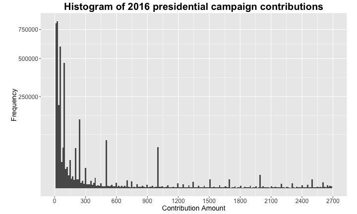
In the next plot, I looked at the relative distribution of the contribution amount in the population. It showed that the bulk of the contributors subscribed between $0 and $100 in a single transaction.
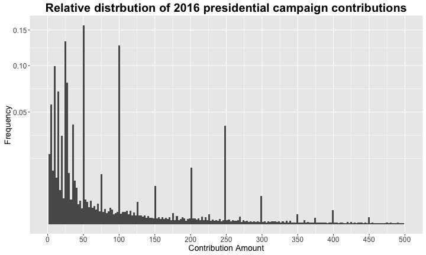
In the next plot involving univariate statistics, I looked at the distribution of number of repeat subscriptions made by each of the contributors in the population. Unsurprisingly, the highest peak was noted at 1 (one contribution per user) and the count gradually tapered off. Here also I chose not to remove the outliers as in my opinion they contain valuable information.
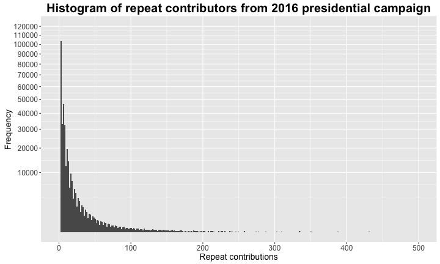
| Contributor Name | Mean Contribution | Median_Contribution | Total Contribution | Minimum Contribution | Maximum Contribution | Count |
|---|---|---|---|---|---|---|
| ACTBLUE | 203.08 | 100 | 3095699.89 | 1.00 | 5400 | 15244 |
| TYLER, CAMM | 1.01 | 1 | 678.00 | 1.00 | 11 | 668 |
| PURCELL, LARRY | 4.83 | 3 | 2590.50 | 1.00 | 30 | 536 |
| FLESNER, CHRISTOPHER | 5.22 | 2 | 2708.47 | 1.00 | 250 | 519 |
| WILLIAMS, JAMES | 36.45 | 25 | 15744.49 | 1.00 | 500 | 432 |
| LENELL, MATT | 1.19 | 1 | 462.00 | 1.00 | 11 | 388 |
| JOHNSON, DAVID | 72.15 | 30 | 25397.55 | 3.34 | 2700 | 352 |
| SMITH, DAVID | 83.04 | 35 | 28982.04 | 1.00 | 2700 | 349 |
| KELJIK, PATRICIA A | 4.07 | 3 | 1368.03 | 1.00 | 27 | 336 |
| DAVIS, JOHN | 51.12 | 3 | 17126.45 | 1.00 | 2700 | 335 |
In the following plot, we look at the number of contributions from each of the top 20 cities (by number of contributions). As it can be seen, New York leads the chart with almost two times that of Los Angeles.
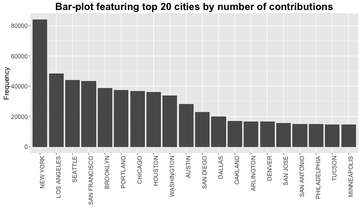
| City | Mean Contribution | Median_Contribution | Total Contribution | Minimum Contribution | Maximum Contribution | Count |
|---|---|---|---|---|---|---|
| NEW YORK | 569.19 | 50.00 | 47842016 | 0.00 | 4904861 | 84053 |
| LOS ANGELES | 209.38 | 27.00 | 10117737 | 0.00 | 10800 | 48322 |
| SEATTLE | 90.93 | 27.00 | 4025281 | 0.00 | 5400 | 44269 |
| SAN FRANCISCO | 179.83 | 35.00 | 7833183 | 0.00 | 10000 | 43558 |
| BROOKLYN | 108.57 | 27.00 | 4215548 | 0.01 | 10800 | 38829 |
| PORTLAND | 73.67 | 27.00 | 2772917 | 0.00 | 10800 | 37639 |
| CHICAGO | 179.01 | 27.00 | 6590774 | 0.00 | 10800 | 36817 |
| HOUSTON | 329.27 | 50.00 | 11889219 | 0.00 | 10800 | 36108 |
| WASHINGTON | 300.30 | 50.00 | 10133465 | 0.00 | 10800 | 33745 |
| AUSTIN | 152.77 | 27.44 | 4307263 | 0.00 | 10800 | 28194 |
| SAN DIEGO | 90.62 | 27.00 | 2083174 | 0.24 | 5400 | 22988 |
| DALLAS | 389.07 | 50.00 | 7757190 | 0.00 | 10800 | 19938 |
| OAKLAND | 95.66 | 27.00 | 1616473 | 0.22 | 5400 | 16898 |
| ARLINGTON | 158.95 | 38.00 | 2650080 | 0.00 | 5400 | 16672 |
| DENVER | 151.97 | 27.00 | 2531392 | 0.00 | 5400 | 16657 |
| SAN JOSE | 81.21 | 27.00 | 1270500 | 0.50 | 5400 | 15644 |
| SAN ANTONIO | 161.46 | 35.00 | 2446300 | 0.33 | 10500 | 15151 |
| PHILADELPHIA | 128.10 | 27.00 | 1914016 | 0.00 | 5400 | 14942 |
| TUCSON | 73.94 | 27.00 | 1094976 | 0.24 | 5400 | 14809 |
| MINNEAPOLIS | 101.78 | 27.00 | 1485698 | 0.00 | 5400 | 14597 |
In the final plot, we look at the top 20 zipcodes in the country that contributed most frequently to the 2016 presidential campaign fund. It can be seen that most of these zipcodes are in one of four metropolitan areas: New York, Boston, San Francisco, or Washington DC.
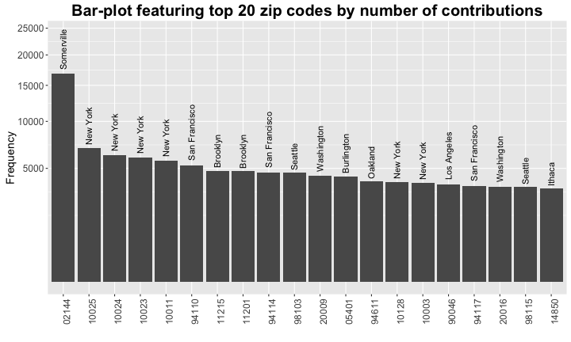
| Zipcode | Mean Contribution | Median_Contribution | Total Contribution | Minimum Contribution | Maximum Contribution | Count |
|---|---|---|---|---|---|---|
| 02144 | 190.74 | 100.00 | 3215384.3 | 1.00 | 5400 | 16857 |
| 10025 | 162.64 | 38.00 | 1129046.6 | 0.00 | 2700 | 6942 |
| 10024 | 312.48 | 50.00 | 1955529.3 | 0.00 | 10800 | 6258 |
| 10023 | 324.81 | 50.00 | 1956009.4 | 0.00 | 5400 | 6022 |
| 10011 | 288.67 | 50.00 | 1654661.0 | 0.22 | 5400 | 5732 |
| 94110 | 116.88 | 35.00 | 614196.9 | 0.09 | 5000 | 5255 |
| 11215 | 115.52 | 27.00 | 549876.2 | 0.94 | 5400 | 4760 |
| 11201 | 220.49 | 38.00 | 1046900.3 | 0.69 | 2700 | 4748 |
| 94114 | 167.66 | 38.00 | 776262.0 | 1.00 | 2700 | 4630 |
| 98103 | 68.81 | 27.00 | 318307.3 | 0.82 | 2700 | 4626 |
| 20009 | 224.48 | 50.00 | 980285.1 | 0.34 | 2700 | 4367 |
| 05401 | 59.79 | 27.00 | 257141.0 | 1.00 | 5400 | 4301 |
| 94611 | 171.59 | 32.87 | 668514.5 | 1.00 | 5400 | 3896 |
| 10128 | 439.27 | 50.00 | 1685465.1 | 0.00 | 5400 | 3837 |
| 10003 | 262.18 | 50.00 | 994177.8 | 0.44 | 3000 | 3792 |
| 90046 | 154.36 | 27.00 | 572050.9 | 1.00 | 2700 | 3706 |
| 94117 | 127.59 | 38.00 | 453713.4 | 0.33 | 5400 | 3556 |
| 20016 | 458.01 | 94.31 | 1611727.5 | 0.98 | 10800 | 3519 |
| 98115 | 73.08 | 27.00 | 254895.9 | 0.64 | 2700 | 3488 |
| 14850 | 72.69 | 27.00 | 246845.8 | 1.00 | 3000 | 3396 |
I chose the 2016 presidential campaign contribution data for all candidates across all states. The initial dataset contained 18 variables of which I retained ten which are as follows:
In addition, I introduced two derived variables which are as given below:
The most important feature in the dataset is the contribution receipt amount as this is the primary metric under study as part of this analysis. The variables candidate name, contributor city, contributor state, contributor zip, contributor employer, contributor occupation, contribution date, and party will be used to aggregate and view the "contribution amount".
The political party and gender of each of the presidential candidates can be useful as it would help with between-group comparisons.
Yes, I truncated the zipcode values provided in the dataset into five-digit zipcodes which is introduced later. In addition, I also converted the contribution dates to YYYY-MM format to look at the campaign contribution for each candidate with respect to time. Finally, I transformed the abbreviated "contributor state" to the full name for plotting purposes.
For the univariate statitics, I investigated both logarithmic and square root transformation on the y-axis in order to ensure that the more frequent groups dont't overshadow the less frequent groups. In case of the contribution amounts, I found a logarithmic transformation was more useful. In addition, I also limited the x-axis (contribution amount) between 0 and 99th percentile to keep the focus on the dominant artificants in the plot. With the relative distribution of the contribution amount, I used the ".." notation to obtain a proportion value for each of the data-bins in my population. Finally, I used the dplyr package to obtain count of repeat contributions made by individual subscribers to the 2016 presidential campaign fund which I highlighted in the final plot in this section.
Before looking at any plot involving two separate variables, I looked at the correlation coefficient between "Contribution date" and "Contribution amount". The results below indicate that there is almost no "linear" relationship between these variables and therefore almost independent of each other.
## [1] -0.02361756
In the "Bivariate Plot" section, I investigated the relationship between the contribution amount across different factor variables including the presidential candidate, contributor occupation, and contributor employer. In addition, I also looked at the number of unique contributors for each 2016 presidential candidate.
In the first plot of this section, I plotted the number of unique contributors by each candidate. I used the square-root transformation for the y-axis. The plot features suggest that Bernie Sanders tops the chart with approximately 220,000 unqiue contributors with Hillary Clinton at the second spot at 180,000. The closest Republican contender, Rafael Cruz, was at 100,000.
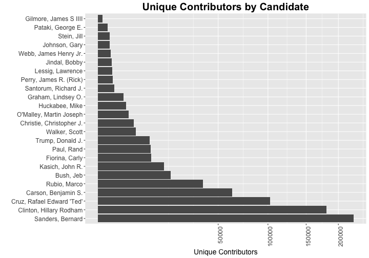
In the next plot, we look at the summary statisitics and gross contribution for each 2016 presidential candidate. The most interesting feature in this plot was the fact that some of the contributors (outliers) to Clinton's presidential campaign contributed more than the gross collection of other presidential candidates.
| Candidate Name | Total Contribution | Mean Contribution | Median Contribution | Minimum Contribution | Maximum Contribution |
|---|---|---|---|---|---|
| Clinton, Hillary Rodham | 200965276.63 | 242.54 | 38.00 | 0.01 | 4904860.5 |
| Sanders, Bernard | 92603135.46 | 49.16 | 27.00 | 1.00 | 10000.0 |
| Cruz, Rafael Edward 'Ted' | 69727027.02 | 128.89 | 50.00 | 1.00 | 10800.0 |
| Rubio, Marco | 40541077.67 | 408.45 | 100.00 | 1.00 | 10800.0 |
| Bush, Jeb | 33773278.24 | 1204.64 | 500.00 | 0.20 | 15000.0 |
| Carson, Benjamin S. | 29013999.56 | 118.47 | 50.00 | 0.50 | 18000.0 |
| Kasich, John R. | 14751218.02 | 585.23 | 250.00 | 3.00 | 29100.0 |
| Christie, Christopher J. | 8133946.64 | 1457.70 | 1000.00 | 1.00 | 7500.0 |
| Fiorina, Carly | 6693844.66 | 243.09 | 100.00 | 2.00 | 10000.0 |
| Walker, Scott | 6387454.96 | 1016.95 | 476.00 | 1.00 | 10800.0 |
| Paul, Rand | 6271793.25 | 195.52 | 50.00 | 0.01 | 7300.0 |
| Graham, Lindsey O. | 4547761.82 | 1171.50 | 500.00 | 5.00 | 10000.0 |
| Trump, Donald J. | 4484497.95 | 298.65 | 162.01 | 1.00 | 86936.8 |
| O'Malley, Martin Joseph | 4057351.76 | 781.46 | 300.00 | 0.01 | 5400.0 |
| Huckabee, Mike | 2498977.66 | 392.98 | 92.00 | 1.00 | 7000.0 |
| Jindal, Bobby | 1275393.16 | 1675.94 | 2700.00 | 5.00 | 2700.0 |
| Perry, James R. (Rick) | 1189868.23 | 1359.85 | 1000.00 | 3.00 | 2700.0 |
| Santorum, Richard J. | 1117908.06 | 687.10 | 250.00 | 2.69 | 5400.0 |
| Lessig, Lawrence | 624219.50 | 466.88 | 250.00 | 1.00 | 2700.0 |
| Pataki, George E. | 476590.98 | 1418.43 | 1000.00 | 20.16 | 2700.0 |
| Webb, James Henry Jr. | 439246.41 | 549.06 | 250.00 | 5.00 | 5400.0 |
| Johnson, Gary | 343054.33 | 537.70 | 250.00 | 10.00 | 5400.0 |
| Stein, Jill | 158502.00 | 173.80 | 100.00 | 5.00 | 2800.0 |
| Gilmore, James S IIII | 99660.71 | 1365.22 | 1000.00 | 19.80 | 2700.0 |
In the next plot, we look at the campaign contributions from the 20 highest grossing occupations. We notice that Attroneys top the chart followed closely by Homemakers. Some of the other professions that also contributed heavily to the 2016 campaign fund include CEOs, consultants, and owners. An interesting feature that we notice here is that CEOs lag behnd attorneys and homemakers in gross contribution but their 75th percentile is significantly higher than any other group.
| Occupation Name | Total Contribution | Mean Contribution | Median Contribution | Minimum Contribution | Maximum Contribution | Count |
|---|---|---|---|---|---|---|
| ATTORNEY | 28964005 | 352.71 | 50.00 | 0.01 | 10800.0 | 82119 |
| HOMEMAKER | 21505435 | 414.55 | 50.00 | 0.05 | 10800.0 | 51877 |
| CEO | 11195230 | 756.95 | 100.00 | 0.24 | 10800.0 | 14790 |
| PHYSICIAN | 10615146 | 196.32 | 50.00 | 0.14 | 20000.0 | 54071 |
| PRESIDENT | 9539833 | 686.42 | 100.00 | 0.05 | 10800.0 | 13898 |
| CONSULTANT | 9003202 | 231.20 | 50.00 | 0.04 | 10000.0 | 38942 |
| LAWYER | 7374094 | 355.84 | 68.44 | 0.08 | 10800.0 | 20723 |
| EXECUTIVE | 7208458 | 704.57 | 100.00 | 0.01 | 86936.8 | 10231 |
| OWNER | 6861447 | 447.85 | 79.46 | 0.64 | 10800.0 | 15321 |
| ENGINEER | 4828687 | 100.34 | 38.00 | 0.50 | 5400.0 | 48124 |
| REAL ESTATE | 4474520 | 466.39 | 100.00 | 0.45 | 10800.0 | 9594 |
| PROFESSOR | 4251680 | 98.08 | 27.00 | 0.09 | 5000.0 | 43351 |
| TEACHER | 4170733 | 59.02 | 25.00 | 0.09 | 5400.0 | 70662 |
| INVESTOR | 4096921 | 986.50 | 250.00 | 1.00 | 10800.0 | 4153 |
| MANAGER | 3897668 | 151.55 | 30.00 | 0.04 | 10800.0 | 25719 |
| STUDENT | 3286753 | 142.31 | 25.00 | 0.09 | 5500.0 | 23095 |
| SALES | 3124551 | 97.84 | 27.00 | 0.09 | 10000.0 | 31934 |
| CONDUIT TOTAL LISTED IN AGG. FIELD | 3096980 | 202.79 | 100.00 | 1.00 | 5400.0 | 15272 |
| BUSINESS OWNER | 2872423 | 201.43 | 50.00 | 0.79 | 10800.0 | 14260 |
| PARTNER | 2485276 | 1051.75 | 500.00 | 1.00 | 10800.0 | 2363 |
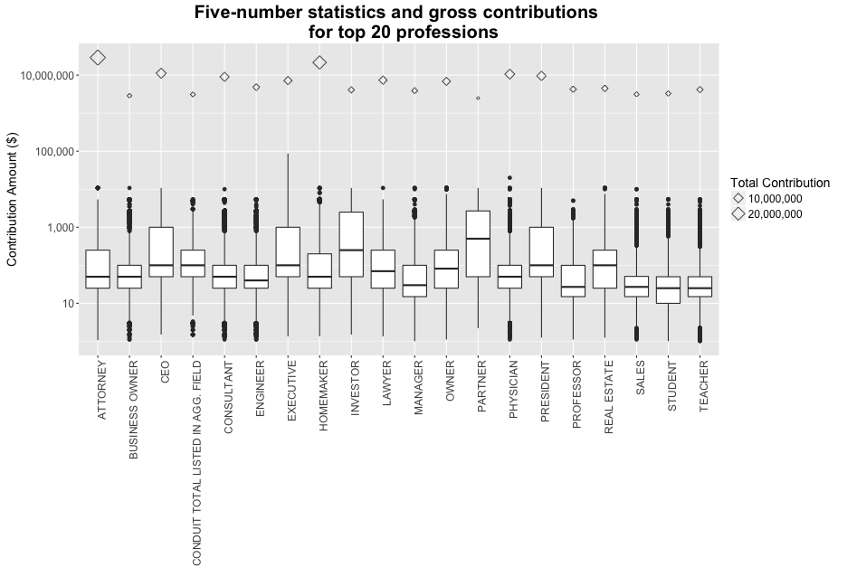
In the final plot in this section, we look at the contributions made by employees of different companies. Employees from Google and Goldman Sachs are almost tied at the top sport for gross contribution while the median and 75th percentile contribution for employyes from Goldman Sachs is almost two orders of magnitude higher. Another interesting feature was that employees from Stanford University comprised one of the top 5 contributing groups to the 2016 presidential campaign fund.
| Employer Name | Total Contribution | Mean Contribution | Median Contribution | Minimum Contribution | Maximum Contribution | Count |
|---|---|---|---|---|---|---|
| 599783.4 | 194.17 | 50 | 1.00 | 5000 | 3089 | |
| GOLDMAN SACHS | 571216.1 | 1779.49 | 2700 | 10.00 | 10800 | 321 |
| MORGAN STANLEY | 444389.5 | 715.60 | 250 | 5.00 | 5400 | 621 |
| MORGAN & MORGAN | 376258.0 | 1062.88 | 500 | 3.00 | 2700 | 354 |
| MICROSOFT | 351106.2 | 120.57 | 35 | 0.56 | 5400 | 2912 |
| STANFORD UNIVERSITY | 346815.9 | 200.01 | 27 | 1.00 | 2700 | 1734 |
| IBM | 266086.0 | 84.42 | 35 | 0.64 | 2700 | 3152 |
| KAISER PERMANENTE | 262499.6 | 88.53 | 27 | 1.00 | 2700 | 2965 |
| WELLS FARGO | 250088.2 | 110.03 | 27 | 1.00 | 5400 | 2273 |
| COLUMBIA UNIVERSITY | 248017.5 | 147.37 | 30 | 0.80 | 2700 | 1683 |
| DLA PIPER LLP | 240866.7 | 1254.51 | 1000 | 10.00 | 2700 | 192 |
| STATE OF CALIFORNIA | 231218.4 | 82.23 | 27 | 1.00 | 5400 | 2812 |
| HARVARD UNIVERSITY | 230816.6 | 154.08 | 27 | 1.12 | 2700 | 1498 |
| U.S. GOVERNMENT | 221536.4 | 127.76 | 50 | 0.49 | 2700 | 1734 |
| KIRKLAND & ELLIS LLP | 221020.6 | 846.82 | 250 | 4.20 | 2700 | 261 |
| MERRILL LYNCH | 216704.9 | 426.58 | 100 | 5.00 | 5400 | 508 |
| SALESFORCE.COM | 214021.4 | 764.36 | 100 | 3.00 | 2700 | 280 |
| AT&T | 211420.4 | 71.16 | 27 | 1.00 | 2700 | 2971 |
| PAUL WEISS RIFKIND WHARTON & GARRISON | 204424.1 | 844.73 | 500 | 0.54 | 2700 | 242 |
| BANK OF AMERICA | 204218.3 | 131.75 | 27 | 1.00 | 2700 | 1550 |
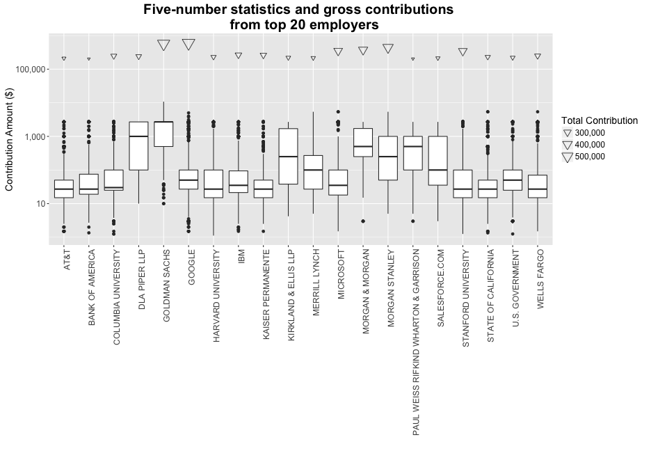
The preceding discussion highlights the observations I made as part of looking at the bivariate statistics in the included dataset.
One of the interesting observation was Bernard Sanders although leads the group in terms of unique contributors, his gross campaign collection is less than half of Clinton's groos collection which implies that the average contribution per contributor is significantly less than any of his contenders. This is further underscored when we look at the median contrbution to his campaign fund which is less than any other 2016 presidential candidate. The other interesting observation was Google and Goldman Sachs employees almost tied in terms of gross contribution but the median and 75th percentile contribution for Goldman Sachs is almost 100 times of Google.
The Democrat front-runners (Hilary Clinton and Bernard Sanders) are significantly better funded than the Republican front-runner (Rafael Cruz and Jeb Bush). Also Bernard Sanders being the candidate with the second highest gross colecction and the lowest median contribution implies that he is more popular than any of his contenders. This was also highlighted in the first plot of this section.
For the multivariate plots, I tried to investigate the campaign contribution with respect to several geographic factors for each of the presidential candidates.
In the first plot of this section, I wanted to investgate if the duration of the campaign contribution had an effect on the periodic or gross contribution for the candidate. The figure below shows the median and gross contribution for each candidate for the period between 1st of January , 2015 and 31st of May 2016. For the Democrat candidates, we notice that the median contribution to Martin O'Malley's campaign fund has been consistently higher than Hillary Clinton or Bernard Sanders. However, the gross contribution for Hillary Clinton has been substantially higher compared to the other Democrat candidates. An interesting trend we note is the gradual decrease in the collection between the Clinton and Sanders camp. The higher popularity and lower median contribution of Bernard Sanders is also highlighted in this plot. For the Republican candidates, we notice that Rafael Cruz dominates the gross contribution. This may be partly due to the headstart he had with respect to all the other contending Republican candidates.
| Party | Candidate Name | Month-Year | Total Contribution | Mean Contribution | Median Contribution | Minimum Contribution | Maximum Contribution | Count |
|---|---|---|---|---|---|---|---|---|
| D | Clinton, Hillary Rodham | Apr 2015 | 13067431.11 | 1138.58 | 500.00 | 1.00 | 5400.00 | 11477 |
| D | Clinton, Hillary Rodham | May 2015 | 11849846.41 | 1140.07 | 500.00 | 0.01 | 5400.00 | 10394 |
| D | Clinton, Hillary Rodham | Jun 2015 | 13853489.36 | 857.43 | 200.00 | 0.09 | 20000.00 | 16157 |
| D | Clinton, Hillary Rodham | Jul 2015 | 7317887.79 | 642.03 | 100.00 | 0.69 | 3700.00 | 11398 |
| D | Clinton, Hillary Rodham | Aug 2015 | 6270589.89 | 432.25 | 87.00 | 0.10 | 2700.00 | 14507 |
| D | Clinton, Hillary Rodham | Sep 2015 | 10401562.58 | 520.08 | 100.00 | 0.02 | 5400.00 | 20000 |
| D | Clinton, Hillary Rodham | Oct 2015 | 9106924.16 | 286.99 | 50.00 | 0.16 | 5400.00 | 31733 |
| D | Clinton, Hillary Rodham | Nov 2015 | 9821975.98 | 391.94 | 50.00 | 0.07 | 5400.00 | 25060 |
| D | Clinton, Hillary Rodham | Dec 2015 | 13405367.07 | 408.23 | 50.04 | 0.04 | 1797624.94 | 32838 |
| D | Clinton, Hillary Rodham | Jan 2016 | 12768301.90 | 258.10 | 50.00 | 0.08 | 1467070.94 | 49471 |
| D | Clinton, Hillary Rodham | Feb 2016 | 23783385.70 | 200.65 | 50.00 | 0.04 | 3686373.26 | 118533 |
| D | Clinton, Hillary Rodham | Mar 2016 | 24084927.50 | 160.16 | 25.00 | 0.01 | 4904860.51 | 150378 |
| D | Clinton, Hillary Rodham | Apr 2016 | 21704267.00 | 132.43 | 25.00 | 0.04 | 3600489.08 | 163895 |
| D | Clinton, Hillary Rodham | May 2016 | 23529320.18 | 136.20 | 25.00 | 0.01 | 4575438.56 | 172750 |
| D | O'Malley, Martin Joseph | May 2015 | 660023.79 | 2024.61 | 2700.00 | 2.00 | 5400.00 | 326 |
| D | O'Malley, Martin Joseph | Jun 2015 | 1231725.84 | 1273.76 | 1000.00 | 0.01 | 5400.00 | 967 |
| D | O'Malley, Martin Joseph | Jul 2015 | 206060.32 | 873.14 | 500.00 | 5.00 | 2700.00 | 236 |
| D | O'Malley, Martin Joseph | Aug 2015 | 250682.32 | 808.65 | 500.00 | 5.00 | 5400.00 | 310 |
| D | O'Malley, Martin Joseph | Sep 2015 | 610920.34 | 799.63 | 500.00 | 5.00 | 5400.00 | 764 |
| D | O'Malley, Martin Joseph | Oct 2015 | 227282.11 | 431.28 | 175.00 | 5.00 | 5400.00 | 527 |
| D | O'Malley, Martin Joseph | Nov 2015 | 306302.66 | 459.22 | 200.00 | 2.20 | 5400.00 | 667 |
| D | O'Malley, Martin Joseph | Dec 2015 | 253970.00 | 435.63 | 250.00 | 3.00 | 5400.00 | 583 |
| D | O'Malley, Martin Joseph | Jan 2016 | 210915.12 | 316.21 | 125.00 | 5.00 | 2700.00 | 667 |
| D | O'Malley, Martin Joseph | Feb 2016 | 25320.00 | 496.47 | 100.00 | 5.00 | 5400.00 | 51 |
| D | O'Malley, Martin Joseph | Mar 2016 | 22974.26 | 1148.71 | 1000.00 | 20.16 | 2700.00 | 20 |
| D | O'Malley, Martin Joseph | Apr 2016 | 35200.00 | 596.61 | 250.00 | 10.00 | 2700.00 | 59 |
| D | O'Malley, Martin Joseph | May 2016 | 15975.00 | 1065.00 | 500.00 | 25.00 | 2700.00 | 15 |
| D | Sanders, Bernard | Apr 2015 | 306886.74 | 254.05 | 104.00 | 10.00 | 5000.00 | 1208 |
| D | Sanders, Bernard | May 2015 | 1422389.62 | 226.96 | 100.00 | 1.00 | 10000.00 | 6267 |
| D | Sanders, Bernard | Jun 2015 | 1548228.89 | 182.96 | 100.00 | 1.00 | 9000.00 | 8462 |
| D | Sanders, Bernard | Jul 2015 | 1392221.59 | 171.99 | 100.00 | 1.00 | 5000.00 | 8095 |
| D | Sanders, Bernard | Aug 2015 | 1755376.26 | 131.60 | 50.00 | 1.00 | 7300.00 | 13339 |
| D | Sanders, Bernard | Sep 2015 | 2855869.18 | 90.44 | 50.00 | 1.00 | 10000.00 | 31579 |
| D | Sanders, Bernard | Oct 2015 | 3526818.13 | 61.84 | 35.00 | 1.00 | 5400.00 | 57034 |
| D | Sanders, Bernard | Nov 2015 | 2611370.90 | 50.18 | 28.54 | 1.00 | 5400.00 | 52036 |
| D | Sanders, Bernard | Dec 2015 | 5567356.92 | 58.67 | 25.00 | 1.00 | 5400.00 | 94895 |
| D | Sanders, Bernard | Jan 2016 | 8157349.02 | 61.03 | 25.00 | 1.00 | 5400.00 | 133660 |
| D | Sanders, Bernard | Feb 2016 | 17096430.68 | 59.36 | 27.00 | 1.00 | 5400.00 | 288029 |
| D | Sanders, Bernard | Mar 2016 | 20776045.88 | 43.19 | 27.00 | 1.00 | 5400.00 | 481077 |
| D | Sanders, Bernard | Apr 2016 | 15209918.31 | 36.67 | 27.00 | 1.00 | 5000.00 | 414765 |
| D | Sanders, Bernard | May 2016 | 10376873.34 | 35.40 | 25.00 | 1.00 | 5388.12 | 293134 |
| R | Bush, Jeb | Jun 2015 | 10952760.27 | 2208.22 | 2700.00 | 3.00 | 5400.00 | 4960 |
| R | Bush, Jeb | Jul 2015 | 4002386.50 | 1582.60 | 1500.00 | 1.00 | 5700.00 | 2529 |
| R | Bush, Jeb | Aug 2015 | 4161313.54 | 1347.58 | 1000.00 | 1.00 | 10000.00 | 3088 |
| R | Bush, Jeb | Sep 2015 | 5168878.44 | 1399.26 | 1000.00 | 1.00 | 15000.00 | 3694 |
| R | Bush, Jeb | Oct 2015 | 3288782.48 | 1073.71 | 500.00 | 1.00 | 10000.00 | 3063 |
| R | Bush, Jeb | Nov 2015 | 2185900.12 | 900.66 | 250.00 | 0.50 | 10000.00 | 2427 |
| R | Bush, Jeb | Dec 2015 | 1751970.90 | 709.59 | 100.00 | 0.20 | 5400.00 | 2469 |
| R | Bush, Jeb | Jan 2016 | 1580624.70 | 503.38 | 100.00 | 0.50 | 5400.00 | 3140 |
| R | Bush, Jeb | Feb 2016 | 664051.29 | 250.30 | 50.00 | 0.50 | 5400.00 | 2653 |
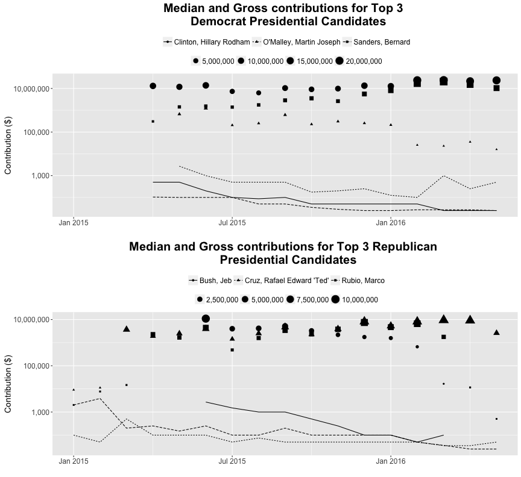
In the next plot I looked at the relative proportion of total contribution made by residents of that state to each of the two political camps - Democrats and Republicans. Not surprisingly, I noticed that the Southern states endorsed the Republican candidates and the North-East and Western states endorsed the Democrat candidates.
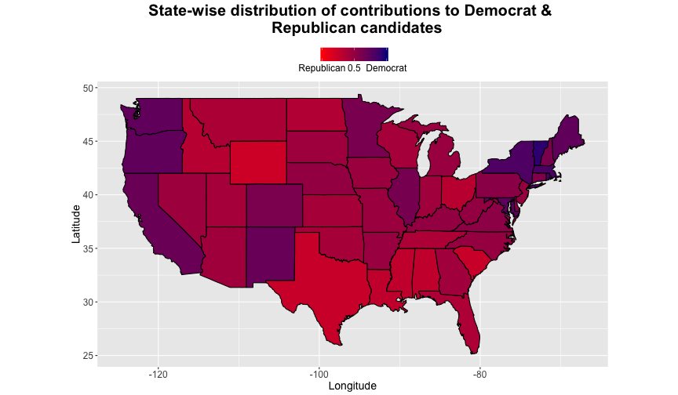
Next, I wanted to determine what were the top 5 zip codes that contributed most significantly to each of the top 3 republican and Democrat presidential candidates. While there is overlap between the candidates (same zipcode contributing heavily to two or more presidential candidates), we notice the following:
| Party | Candidate Name | Zipcode | Total Contribution | Mean Contribution | Median Contribution | Minimum Contribution | Maximum Contribution | Count |
|---|---|---|---|---|---|---|---|---|
| D | Clinton, Hillary Rodham | 10185 | 21639029.51 | 281026.36 | 11.00 | 1.00 | 4904861 | 77 |
| D | Clinton, Hillary Rodham | 10023 | 1418377.97 | 425.17 | 75.00 | 0.09 | 2700 | 3336 |
| D | Clinton, Hillary Rodham | 10024 | 1414019.27 | 443.82 | 99.00 | 0.04 | 2700 | 3186 |
| D | Clinton, Hillary Rodham | 10011 | 1317309.05 | 385.29 | 67.24 | 0.22 | 5400 | 3419 |
| D | Clinton, Hillary Rodham | 10128 | 1086229.47 | 540.41 | 100.00 | 1.00 | 2700 | 2010 |
| D | O'Malley, Martin Joseph | 20854 | 93349.00 | 1037.21 | 500.00 | 24.00 | 2700 | 90 |
| D | O'Malley, Martin Joseph | 21093 | 80309.00 | 1216.80 | 1000.00 | 24.00 | 2700 | 66 |
| D | O'Malley, Martin Joseph | 21212 | 78245.16 | 717.85 | 250.00 | 20.16 | 2700 | 109 |
| D | O'Malley, Martin Joseph | 21210 | 67060.00 | 931.39 | 500.00 | 2.00 | 2700 | 72 |
| D | O'Malley, Martin Joseph | 20817 | 61549.00 | 1206.84 | 1000.00 | 3.00 | 2700 | 51 |
| D | Sanders, Bernard | 02144 | 3164729.62 | 191.84 | 100.00 | 1.00 | 5400 | 16497 |
| D | Sanders, Bernard | 94110 | 279780.84 | 75.37 | 27.00 | 1.00 | 5000 | 3712 |
| D | Sanders, Bernard | 10025 | 242778.80 | 64.84 | 27.00 | 1.00 | 2700 | 3744 |
| D | Sanders, Bernard | 05401 | 212676.76 | 52.64 | 27.00 | 1.00 | 2690 | 4040 |
| D | Sanders, Bernard | 98103 | 202881.45 | 51.77 | 27.00 | 1.00 | 2700 | 3919 |
| R | Bush, Jeb | 10021 | 282500.00 | 2373.95 | 2700.00 | 250.00 | 5400 | 119 |
| R | Bush, Jeb | 10128 | 271529.00 | 1939.49 | 2700.00 | 25.00 | 5400 | 140 |
| R | Bush, Jeb | 33480 | 263100.00 | 1852.82 | 2700.00 | 50.00 | 5400 | 142 |
| R | Bush, Jeb | 33156 | 254303.00 | 1883.73 | 2700.00 | 1.00 | 5400 | 135 |
| R | Bush, Jeb | 10065 | 246039.00 | 2067.55 | 2700.00 | 20.00 | 5400 | 119 |
| R | Cruz, Rafael Edward 'Ted' | 77024 | 1339279.00 | 1379.28 | 250.00 | 5.00 | 10800 | 971 |
| R | Cruz, Rafael Edward 'Ted' | 77056 | 611890.50 | 1381.24 | 250.00 | 5.00 | 10800 | 443 |
| R | Cruz, Rafael Edward 'Ted' | 77019 | 579019.00 | 1318.95 | 250.00 | 5.00 | 10800 | 439 |
| R | Cruz, Rafael Edward 'Ted' | 75225 | 375726.16 | 816.80 | 100.00 | 5.00 | 10800 | 460 |
| R | Cruz, Rafael Edward 'Ted' | 77382 | 350867.00 | 664.52 | 100.00 | 1.00 | 10800 | 528 |
| R | Rubio, Marco | 33037 | 463480.00 | 2015.13 | 1850.00 | 20.00 | 9800 | 230 |
| R | Rubio, Marco | 33480 | 311568.05 | 1089.40 | 1000.00 | 3.05 | 5400 | 286 |
| R | Rubio, Marco | 34102 | 247858.66 | 1169.14 | 500.00 | 20.00 | 5000 | 212 |
| R | Rubio, Marco | 90210 | 242830.00 | 1498.95 | 1700.00 | 10.00 | 5400 | 162 |
| R | Rubio, Marco | 33143 | 230568.20 | 1020.21 | 325.00 | 3.05 | 5400 | 226 |
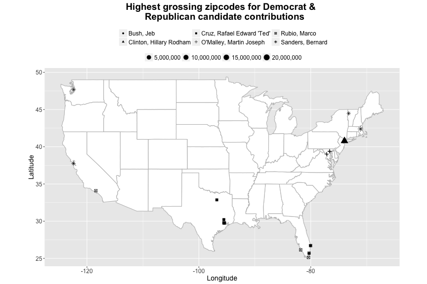
In the next plot, I looked at the top 10 zipcodes by the number of unique contributors for each presidential candidate. It can be seen that the list of zipcodes from this section and those featured in the 6th plot on univariate statistics are pretty much the same. For most part, the results from this plot were in agreement with what has been reported in the previous plot. However, there were a few additional artifacts which are listed below:
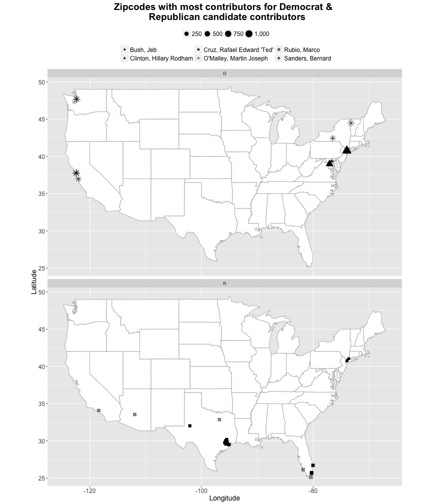
In the final plot of this section, I plotted the top 5 cities that grossed highest for each of the top 3 (in terms of gross campaign contribution) presidential candidates from the Democrat and Republican camps. The results seen here reiterated the findings before - Democrats were supported by residents of New York (Ne York and Brooklyn), Maryland (Baltimore, Bethesda, and Washington DC), Washington (Seattle), and California (Los Angeles and San Francisco) and Republicans were primarily funded by contributions from residents of Florida (Miami and Naples) and Texas (Houston, Dallas, Fort Worth, Austin, and San Antonio). A quick note here, many of these cities were also featured in the 5th plot (frequent cities by number of contributions made to the presidential campaign fund) in the univariate section. The only new observation is we see that Portland residents contributed significantly to Bernard Sanders' campaign fund.
| Party | Candidate Name | City | Total Contribution | Mean Contribution | Median Contribution | Minimum Contribution | Maximum Contribution | Count |
|---|---|---|---|---|---|---|---|---|
| R | Bush, Jeb | NEW YORK NY | 2511485.0 | 1884.08 | 2700.00 | 1.00 | 5400 | 1333 |
| R | Bush, Jeb | HOUSTON TX | 1200143.5 | 1415.26 | 1000.00 | 1.00 | 5400 | 848 |
| R | Bush, Jeb | DALLAS TX | 881903.5 | 1699.24 | 2000.00 | 1.00 | 5400 | 519 |
| R | Bush, Jeb | MIAMI FL | 814032.4 | 1198.87 | 500.00 | 1.00 | 5400 | 679 |
| R | Bush, Jeb | WASHINGTON DC | 799723.8 | 1101.55 | 500.00 | 0.50 | 5400 | 726 |
| D | Clinton, Hillary Rodham | NEW YORK NY | 38323731.0 | 947.58 | 67.89 | 0.04 | 4904861 | 40444 |
| D | Clinton, Hillary Rodham | WASHINGTON DC | 7133168.6 | 378.48 | 100.00 | 0.04 | 5000 | 18847 |
| D | Clinton, Hillary Rodham | LOS ANGELES CA | 6041127.8 | 377.78 | 50.00 | 0.05 | 5400 | 15991 |
| D | Clinton, Hillary Rodham | SAN FRANCISCO CA | 4808068.8 | 359.83 | 50.00 | 0.09 | 5400 | 13362 |
| D | Clinton, Hillary Rodham | BROOKLYN NY | 2488408.1 | 202.82 | 38.00 | 0.01 | 2700 | 12269 |
| R | Cruz, Rafael Edward 'Ted' | HOUSTON TX | 5839646.2 | 428.38 | 50.00 | 1.00 | 10800 | 13632 |
| R | Cruz, Rafael Edward 'Ted' | DALLAS TX | 2497155.5 | 543.92 | 75.00 | 1.00 | 10800 | 4591 |
| R | Cruz, Rafael Edward 'Ted' | AUSTIN TX | 1096225.8 | 290.39 | 50.00 | 1.00 | 10800 | 3775 |
| R | Cruz, Rafael Edward 'Ted' | FORT WORTH TX | 818465.5 | 238.48 | 50.00 | 1.00 | 10800 | 3432 |
| R | Cruz, Rafael Edward 'Ted' | SAN ANTONIO TX | 812312.2 | 163.25 | 50.00 | 1.00 | 10500 | 4976 |
| D | O'Malley, Martin Joseph | BALTIMORE MD | 460135.8 | 907.57 | 500.00 | 2.00 | 5400 | 507 |
| D | O'Malley, Martin Joseph | NEW YORK NY | 140024.0 | 809.39 | 250.00 | 5.00 | 2700 | 173 |
| D | O'Malley, Martin Joseph | WASHINGTON DC | 137493.1 | 582.60 | 250.00 | 1.00 | 2700 | 236 |
| D | O'Malley, Martin Joseph | BETHESDA MD | 114081.7 | 992.01 | 500.00 | 3.00 | 2700 | 115 |
| D | O'Malley, Martin Joseph | SILVER SPRING MD | 53645.0 | 406.40 | 137.50 | 5.00 | 2700 | 132 |
| R | Rubio, Marco | NEW YORK NY | 1631249.7 | 1183.78 | 500.00 | 5.00 | 10800 | 1378 |
| R | Rubio, Marco | MIAMI FL | 969856.6 | 462.06 | 50.00 | 3.05 | 5700 | 2099 |
| R | Rubio, Marco | DALLAS TX | 962537.7 | 914.09 | 250.00 | 4.00 | 5400 | 1053 |
| R | Rubio, Marco | HOUSTON TX | 877851.7 | 711.96 | 250.00 | 5.00 | 5400 | 1233 |
| R | Rubio, Marco | NAPLES FL | 631021.9 | 572.62 | 100.00 | 3.05 | 5400 | 1102 |
| D | Sanders, Bernard | NEW YORK NY | 2379569.2 | 64.13 | 27.00 | 1.00 | 5400 | 37104 |
| D | Sanders, Bernard | SAN FRANCISCO CA | 1862618.1 | 65.46 | 27.00 | 1.00 | 10000 | 28456 |
| D | Sanders, Bernard | SEATTLE WA | 1714427.9 | 53.53 | 27.00 | 1.00 | 5000 | 32028 |
| D | Sanders, Bernard | LOS ANGELES CA | 1604977.5 | 55.42 | 27.00 | 1.00 | 5500 | 28960 |
| D | Sanders, Bernard | PORTLAND OR | 1271718.6 | 48.04 | 27.00 | 1.00 | 7300 | 26472 |

Following are the observations that can be made from the plots presented in the previous section:
We noticed that if a particular zip code or city heavily contributed to one particular candidate, it was likely that they would contribute significantly to other candidates of the same political party. We saw this trend with both Republican and Democrat candidates. Another observation we made was the duration of the campaign had an effect on the overall collection for any given candidate. This can be seen with Martin O'Malley whose gross colecction for any particular month was significantly less than that of Hillary CLinton or Bernard Sanders despite the fact that Martin O'Malley's median contribution amount was consistently higher than that of the other candidates. The same aplied to candidates from the Republican party where we witnessed that Jeb Bush consistently fell behind Rafael Cruz and Rubio Marco.
No.
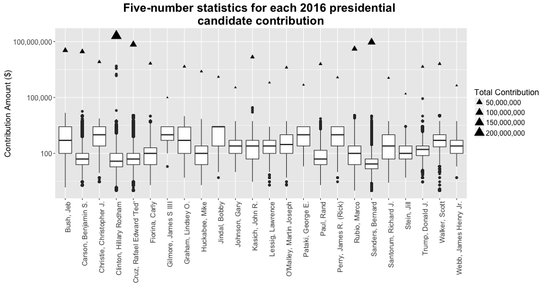
In the first plot of this section, we revisit the five number statistics and gross collection by each presidential candidate's campaign fund. The interesting feature in this plot was the fact that some of the contributors (outliers) to Clinton's presidential campaign contributed more than the gross collection of other presidential candidates.
In the next plot of this section, we look at the proportion of campign contributions from that state that were made to the Republican and Democrat candidates. As expected, the North-East and West-Coast states endorsed the Democrat candidates and the Southern states endorsed the Republican candidates.
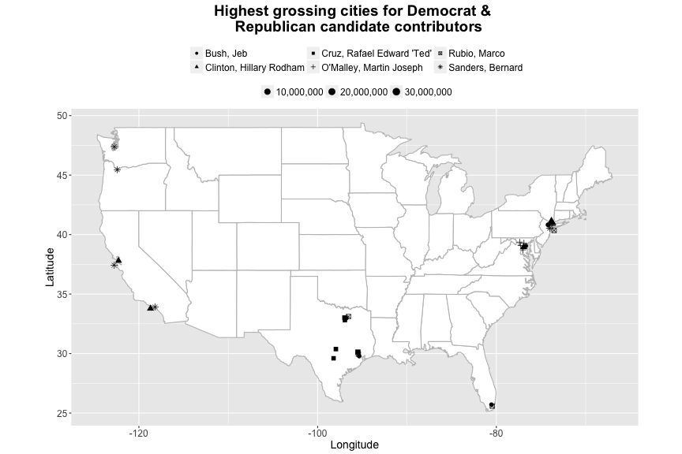
The final plot of this section points out the major cities that contributed most significantly towards each of the presidential candidate's campaign fund. Bernard Sanders seems to have the highest spatial variation in terms of his followers who contributed to his campaign.
While conducting this study, I felt that certain variables of interest could have been useful towards obtaining a better insight of the underlying data. The lack of demographic information about the contributors enforced certain restriction on what can be achieved with this dataset. Some additional questions that I would have liked to answer were as follows:
The location information on the contributors was definitely helpful to recognize the followers for any given candidate spatially. However, demographic information would have helped us understand some basic cause-and-effect relationships as the policies put forward by any candidate are more likely to attract or alienate one group versus the other.
In the introduction to this study, I started by identifying a few questions I would liked to know based on what I felt was possible given the dataset we had. Here the answers to those and some additional insight we found during course of this study.